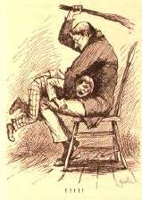

|
 "The directors of the Concord Public Library have joined in the general scheme to advertise MARK TWAIN'S new book, 'Huckleberry Finn.' They have placed it on the Index Expurgatorius, and this will compel every citizen of Concord to read the book in order to see why the guardians of his morals prohibited it." So reported the St. Louis Post-Dispatch on 17 March 1885 in one of the earliest newspaper accounts of the first time Huck Finn was banned. The fullest account that I know of appeared the next day, in the New York Herald. The tone seems to support the decision of the Library directors. On 23 March 1885 the Boston Daily Advertiser reported that "in papers from one end of the country to the other the statement is published and commented upon that the public library committee of Concord has marked 'Huckleberry Finn' as unworthy of a place on its shelves." Many papers supported the Library's decision. It was disapproved and even ridiculed in others, including the San Francisco Chronicle, which on 29 March 1885 printed a strong defense of the novel. One of the most interesting reverberations of the Library's action occurred at the New York State Reformatory for juvenile delinquents, which consulted a professor about whether the book belonged in their library. (Huck, of course, proposes to reform himself in Chapters 16 and 31, when his conscience rebukes him for helping a runaway slave -- these may be the kind of episodes that Professor Sanborn has in mind when he recommends using MT's novel in the institution's "Practical Morality Class.") The controversy about Huck Finn also became an occasion for some contemporaries to re-examine the character of "Mark Twain" himself, as a man and as a writer. At the end of March, The Critic reprinted examples of this debate side-by-side: From the beginning of the controversy the Hartford Courant had loyally defended the book. On 4 April 1885 it summed up the affair in an article that included the response MT himself made for the public record, where he too treats the event as a form of advertising. |
| For additional contemporary accounts of the incident, see Virgina Cope's Exhibit on Huckleberry Finn. |